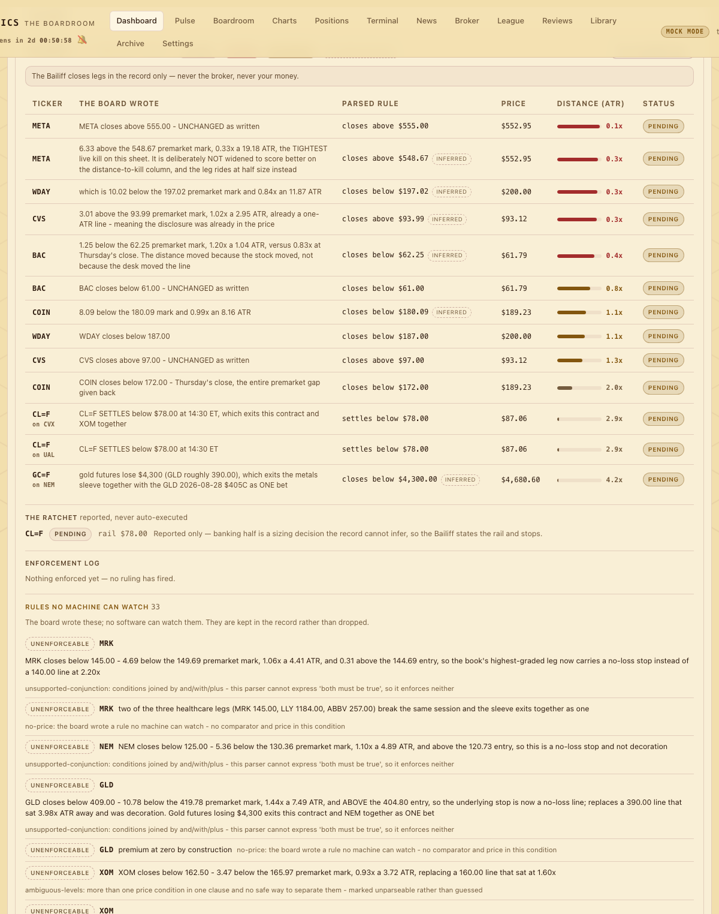

Engine · every 15 minutes
The Bailiff
The officer of the court: it parses the board's written invalidations into typed triggers, watches the tape on the basis each ruling names, and enforces a fired ruling in the record only — never a broker, never your money.
Why there is a Bailiff#
Until round 16 the Evening Court ruled and nothing enforced. Every morning lead carried a written invalidation — "RTX closes below 219.00", "WTI settles below $78" — and every one was prose consumed by no software. The Skeptic proved it on 2026-08-20: grep -rn invalidation bablytics/ returned zero lines, the Paper League's only exit was a calendar, and RTX sat through its own stop with nothing acting. The Bailiff is the officer of that court: it reads what the board wrote, watches the tape, and when a ruling fires it closes the leg in the record — the board's own book and the Paper League. One honest caveat up front: the written invalidations it parses come from the live-board briefing persisted into leads.features_json; the in-app morning pipeline (mock or AI) does not currently write one, so on those days the docket is empty and the card says so.
bablytics/bailiff/ never imports the broker package, never writes the staged-order tables, never constructs an order of any kind. The integrator's grep for broker, staged_orders and place_order inside the package returns zero lines and is part of acceptance. Your real positions may be watched and reported; they are never closed. Every payload and the dashboard card carry the line: "The Bailiff closes legs in the record only — never the broker, never your money."
From prose to typed triggers#
triggers.parse_invalidation(text, lead) turns a written invalidation into machine-readable triggers without inventing meaning. Every clause ends up in exactly one of two lists — a trigger, or an unenforceable entry with a reason and the original text. Nothing is dropped. A trigger is:
- ticker
- the subject the condition binds to — which may differ from the lead's own ticker
- comparator
beloworabove- price
- the level, as written
- basis
close,settleorintraday— what kind of print can satisfy it- confidence
explicitwhen the basis word was written;inferredwhen it was not- source_text
- the clause, verbatim — carried into every event and close reason
The rules the parser honours:
- Subject binding. "XOM closes below 154" binds to XOM even on another lead's invalidation; a bare "close below 110" binds to the lead's own ticker. A deliberately small alias map handles the non-equity subjects the board actually writes: WTI/crude →
CL=F, Brent →BZ=F, gold →GC=F, VIX →^VIX. - Basis. "closes" → close (explicit). "settles" → settle (explicit). "trades" or "intraday" → intraday (explicit). A bare "below 140", the noun "close", or a directional verb with no basis word ("reclaims 84", "gold futures lose $4,300") → close, confidence inferred. Close is the conservative default because a close-basis trigger cannot fire on an intraday tick.
- Compounds. The text splits on " or " first, so one sentence can yield several triggers. Conditions joined by " and " / " with " / " plus " are never merged — they are retained as unsupported-conjunction, because guessing at "both must be true" would fire a kill the board did not write.
- Ambiguity. Percentages, basis points, ATR multiples, clock times and approximate levels ("GLD below roughly 390") are never taken as prices; a clause offering more than one candidate is marked unparseable rather than guessed at.
- Not every watchable rule is a kill. "banks half … by ratchet" and "no adds while SPY holds below 770" are retained as not-an-exit: reported, never enforced as a close.
Unenforceable entries carry one of seven reason codes — no-price, narrative-condition, ambiguous-levels, unsupported-conjunction, approximate-level, not-an-exit, no-subject — each followed by a sentence a human can read. The module ships a hand-labelled corpus of 43 real invalidation strings copied verbatim from four sessions' briefings: 59 triggers emitted, precision 1.000 and recall 0.967 against a careful reader's intent, 26 unenforceable conditions retained, 0 silently dropped. The two misses are deliberate refusals of the verb "breaks", which can break either way. The honest claim is "no wrong trigger on 43 real strings", not on English — and the briefing spec now asks the slate desk to emit a structured invalidation_trigger beside the prose, so future books need no parsing; the parser stays for legacy and as a cross-check.
Three bases, four verdicts#
The discipline that matters most is the one the board demanded when it wrote "the rail says SETTLE": a close-basis trigger may never fire on an intraday tick. "RTX closes below 219.00" is a statement about the 16:00 print, and 218.01 at 11:04 is not that statement.
| Basis | Observable from | What is read | Before that |
|---|---|---|---|
close | 16:00 ET | the daily bar dated exactly the evaluation day — never the live feed | pending |
settle | 14:30 ET | the last 1-minute print at or before 14:30, timestamp recorded | pending |
intraday | any time in session | the live 1-minute pre/post-market print | — |
This is enforced structurally, three ways: a single basis gate decides when a basis is observable, and the observer refuses to look at any price before it opens; the informational current price (for distance) and the basis-correct observed price (for the verdict) are different fields in different keys, so nothing ever compares a live tick against a close rule; and a fire guard re-checks the clock immediately before any verdict becomes "fired". An unrecognized basis falls back to close (the strictest); a missing daily bar leaves a trigger pending rather than firing against a stale prior close.
Each ruling ends a pass as one of four verdicts: ARMED — observed on its basis, not hit; FIRED — observed on its basis and hit, with the fired price and timestamp; PENDING — the basis is not observable yet, reason written out ("close basis: not observable until 16:00 ET (an intraday tick is not a close)"); UNENFORCEABLE — the board wrote a rule no machine can watch. Every row also carries the signed distance to the level in units of that ticker's 14-day ATR (positive is cushion, negative means price is already through) — the Skeptic's own metric for which rulings can bite today. A trigger already fired in the record stays fired; a price that recovers does not un-fire a ruling, and that is also the idempotence key for enforcement.
Dry run versus enforce-in-record#
Two database settings gate everything, both read at job time: bailiff_enabled (default 1) decides whether the jobs run at all; bailiff_dry_run (default 1) decides whether a fired ruling is enforced. Enforcement is opt-in, never assumed. With the default in place a scheduled pass changes nothing in the database — it does not even persist the parsed docket. The API mirrors that: POST /api/bailiff/evaluate treats an omitted body, or one without dry_run, as a dry pass; enforcement happens only when the caller says {"dry_run": false} outright.
When enforcement is on and a ruling fires, the pass does four things, all in the record: it persists the triggers first (so each row has an id to key on), marks the lead closed (closed_at, close_price, close_reason), closes every member's open Paper League leg in that ticker for that run at the lead's own mark — kind="bailiff", reason = the written condition — and recomputes those members' equity, then writes a bailiff_events row. Running the pass twice does not double-close: only open rows are selected, a closed lead refuses a second close, and the fired status on the trigger is the key. Nothing else, anywhere, is touched — and under neither setting is anything ever sent to a broker.
The schedule#
bailiff_watch#Evaluate every trigger on the day's run (today's completed run, else the most recent). Intraday-basis triggers can fire here; close- and settle-basis ones report pending with a reason.
bailiff_ratchet#Check the standing crude rail against the 14:30 settlement. Reports BANK-HALF or no-action. Executes nothing.
bailiff_close_sweep#The close-basis pass — the only time "closes below" rulings can land a verdict, because the 16:00 print now exists.
The ratchet — reported, never executed#
The ratchet is a separate rule type. The day's briefing may write a standing crude rail ("bank half of the XOM shares and half of the CVX call if front-month CL=F settles above $85.00 at 14:30 ET"). ratchet_check reads that level out of the briefing's rules, prices front-month CL=F on a settle basis, and reports whether the rail armed. executed is always false: banking half is a sizing decision the record cannot infer, so the Bailiff states the rail and stops. Before 14:30 ET the rail is pending — an overnight print of $86.82 does not arm a rail written against the settlement, and neither does a $90 tick at noon.
The first dry run, 2026-08-20#
Against run 14 (20 leads) at 10:34 ET the Bailiff parsed 25 price triggers and 14 unenforceable conditions. The verdict line read 1 armed · 0 fired · 24 pending · 14 unenforceable, and nothing was written. The one armed ruling was WMT's — the only intraday-basis kill in the book ("WMT trades above 108.50"). RTX, the known live case, was read as RTX below 219.00 on a close basis, priced at 220.04, +0.25 ATR away — and correctly pending: the condition the board wrote is about the 16:00 print, and RTX could have traded to 210 at noon without the Bailiff firing it. The three crude rails ("WTI settles below $78") resolved to CL=F on a settle basis and waited for 14:30.
Of the fourteen rules no machine could watch, seven turned on a headline, six had no price, one was an "and". Nine of the fourteen were cross-leg basket exits — "the MRK/LLY sleeve rule fires", "the PGR leg breaks 209.00 and the pair comes off together". The board was writing portfolio rules its own trigger vocabulary cannot express: a finding about the briefing, not the parser, and the reason the briefing spec now asks for structured triggers. The full ruling table is in data/boardroom/2026-08-20/bailiff_dry_run.md.
The dashboard card#
The Bailiff surfaces as a card on the morning dashboard, directly under the midday card: the four counts; the standing record-only line; a table of live rulings (ticker, the written condition, the parsed trigger, current price, distance in ATR, a status chip); the ratchet rail; a feed of fired events with timestamps and reason text; and — under Rules no machine can watch, visible and never collapsed — the unenforceable list. Run the Bailiff (dry) posts a dry evaluation and renders the result with a "reported only, nothing was enforced" note. There is no button for a live pass; enforcement is a deliberate API call or the scheduled job with dry-run switched off.
Honest limits#
- Parser precision is 1.000 on this corpus — 43 strings from four sessions by one board. A new phrasing is a new case; add it with its hand label before trusting the parse.
- The schema has no quorum and no conjunction: "two of the three healthcare legs break their lines" and "VIX above 16 with SPY under 770" are retained as unenforceable rather than approximated. Basket exits are the largest gap.
- An inferred trigger is a reading, not a quotation: "gold futures lose $4,300" became
GC=F below 4300on a close basis because close is the conservative default. Inferred rows are labelled so you can weigh them differently. - A dry run leaves no trace in the database by design; the only record of what a dry pass would have done is the day's report and the card you were looking at.
- Pending is not "safe": a close-basis ruling can sit 3 ATR through its level all afternoon and still read pending until the 16:05 sweep. The Δ ATR column exists so you can see that.
- No invalidation, no ruling: the in-app pipeline writes no
invalidationfield (there is none inpipeline.py,board.pyor theleadsschema). Rulings exist only for runs whose leads were persisted from the live-board briefing with a written invalidation infeatures_json; an app-only morning yields an empty docket, not a silent pass.
API and record#
- GET /api/bailiff/status?run_id=
- the ruling table with verdicts and distance in ATR, the unenforceable list, recent events, the ratchet, the scheduled enabled/dry flags, disclaimer
- POST /api/bailiff/evaluate {"dry_run": true|false}
- one evaluation pass;
dry_rundefaults totrue - bailiff_enabled · bailiff_dry_run
- database settings, both default
1 - lead_triggers
- lead_id, ticker, comparator, price, basis, source_text, confidence, status, fired_at, fired_price
- bailiff_events
- run_id, lead_id, event, detail_json, created_at
- leads.closed_at / close_price / close_reason
- the record-only close, written only by an enforcing pass
- paper_positions.exit_kind = "bailiff"
- League legs closed by a fired ruling, reason = the written condition